-

고래와 바다이야기
수산과학관을 방문하시면 제일 처음 만나게 되는 [고래와 바다이야기]~ 광활한 바다를 유영하는 고래를 통해 바다의 공간감을 느껴보고 고래의 특징과 생활, 고래의 종류, 고래의 생존과 보호 등 고래에 관한 다양한 정보를 얻을 수 있는 공간입니다. 이 곳에는 수산과학관의 대표 전시물인 길이 10m의 참고래 실물골격이 여러분을 맞이합니다. -

고래와 바다이야기
수산과학관을 방문하시면 제일 처음 만나게 되는 [고래와 바다이야기]~ 광활한 바다를 유영하는 고래를 통해 바다의 공간감을 느껴보고 고래의 특징과 생활, 고래의 종류, 고래의 생존과 보호 등 고래에 관한 다양한 정보를 얻을 수 있는 공간입니다. 이 곳에는 수산과학관의 대표 전시물인 길이 10m의 참고래 실물골격이 여러분을 맞이합니다. -
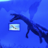
수상생물의 진화로 보는 바다의 시간
수상생물의 진화로 보는 바다의 시간 -
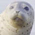
우리나라 수산생물
담수어, 해수어, 갑각류, 해양포유류, 패류 등 전체 200여종 360여마리의 다양한 수산생물 실물표본이 전시되어 있어 환경에 적응하며 살아가는 수산생물들의 독특한 모습을 생생하게 관찰할 수 있습니다~~ -
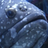
수족관
수산과학관 수족관은 담수어, 해수어, 열대관상어 등 전체 50여종 400여마리의 살아있는 물고기를 만나볼 수 있는 공간입니다. 또한 관람객들의 체험공간으로 물고기, 불가사리, 고둥, 조개 등을 직접 만져볼 수 있는 대형 터치풀도 마련되어 있습니다~~ -
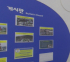
참여의 장
참여의 장 -
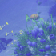
돔영상관
돔영상관
-
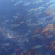
수산과학과 수산자원
해양의 탄생부터 수산자원의 이용, 수산과학의 효용성을 느껴볼 수 있는 반구형 인트로 영상과 해수의 온도, 염분 분포, 해류 등 바다의 환경을 알아보고 수산업과 수산과학에 관한 정보를 얻을 수 있는 공간입니다. -
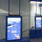
어업기술의 발전
전통어업에서부터 현대어업에 이르기까지 어업기술의 발전사를 한눈에 볼 수 있는 공간입니다~~ 동,서,남해안에서 이뤄졌던 다양한 전통어업을 터치영상과 모형을 통해 볼 수 있으며 현대어업의 다양한 어구어법과 더불어 어업기술의 현대화와 첨단 기술을 통하여 지속가능한 친환경 어업에 대한 정보도 얻을 수 있는 공간입니다~ -
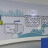
수산양식기술의 발전
수산양식의 개념과 의미를 소개하는 곳으로 대표적인 수산물인 김, 굴, 넙치의 양식방법과 생태 등을 배워보고 바이오플락, 스마트 양식 등 첨단 양식 기술에 대한 정보도 얻을 수 있는 공간입니다~ -
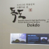
독도관
수산과학관 독도관에는 독도가 지닌 다양한 가치와 우리나라 영토인 증거를 보여주는 국내,외 문헌 등으로 구성되어 있으며 독도 모형과 독도의 사계절을 볼 수 있는 써클영상, 그리고 독도에서 채집된 어류들의 실물박제가 전시되어 있습니다~ 또한 실시간 영상을 통해 독도의 현재 모습을 관찰해 볼 수 있는 공간입니다. -
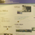
국립수산과학원
국립수산과학원의 역사를 보실 수 있는 공간입니다. -
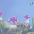
수산과학 미래꿈터
수산과학 미래꿈터 -
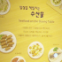
수산식품이용가공
수산식품이용가공 -
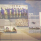
기장홍보관
기장홍보관 -
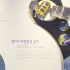
해양환경
해양환경 -
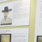
수산과학인 명예의 전당
수산과학인 명예의 전당 -
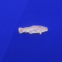
한반도 수산생물 파노라마
한반도 수산생물 파노라마
-
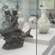
물고기 문화 예술품 전시실
물고기 문화 예술품 전시실